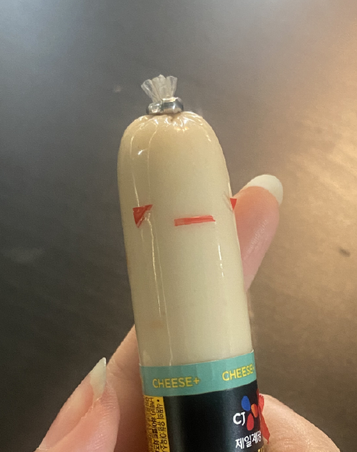
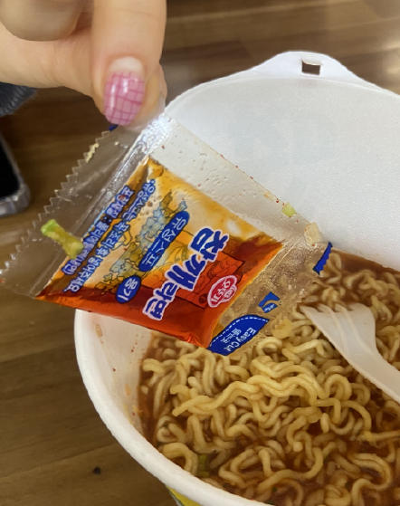
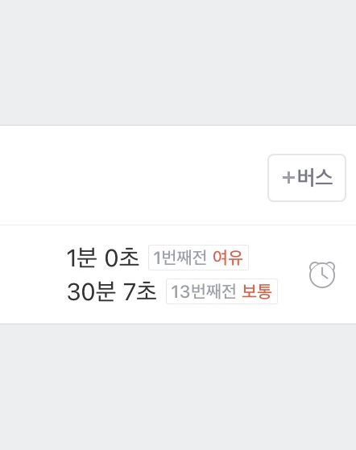
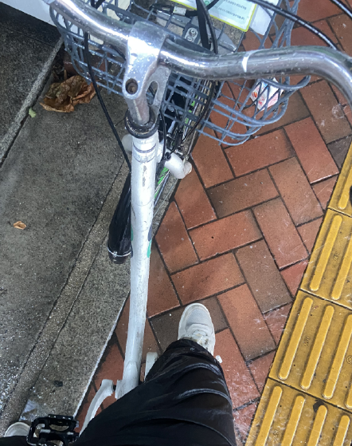
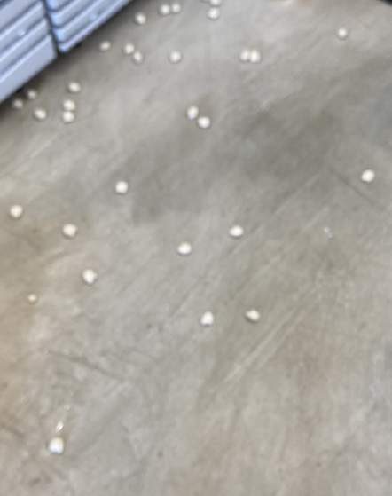
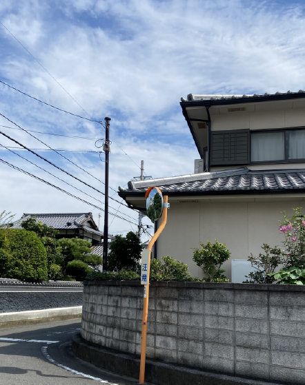

피곤한 소시지
가끔씩 소시지를 어떻게 뜯어도 이상하게 뜯길 때가 있죠. 그럴 때마다 저는 맘이 피곤해집니다...

피곤한 라면
며칠 전 있었던 일입니다. 이미 팔팔 끓는 물을 넣고 4분이나 기다린 뒤에서야 빼지 않은 스프를 발견했어요...

피곤한 버스
저는 버스의 배차간격으로 하루 행운을 테스트 합니다. 잘못하면 사진처럼 30분을 기다려야하기 때문이에요...

피곤한 자전거
폭우다 못해 바람까지 강하게 부는 날 집에 빨리 가고 싶은 마음에 자전거를 탔었어요. 그날은 몸이 정말 피곤했습니다...

피곤한 떡
아르바이트를 할 때 실수한 사진입니다. 용기에 있던 떡을 모두 엎어버려서 정말 골치가 아팠습니다...

피곤한 여행
여름 일본 여행에서 너무 더운 날씨에 많이 걸었더니 잠을 자도자도 피곤했었습니다...